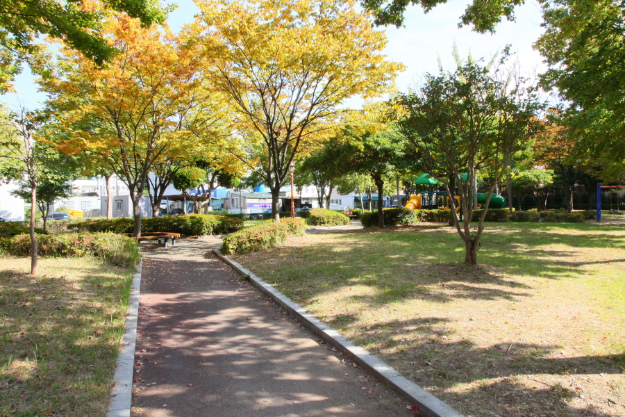
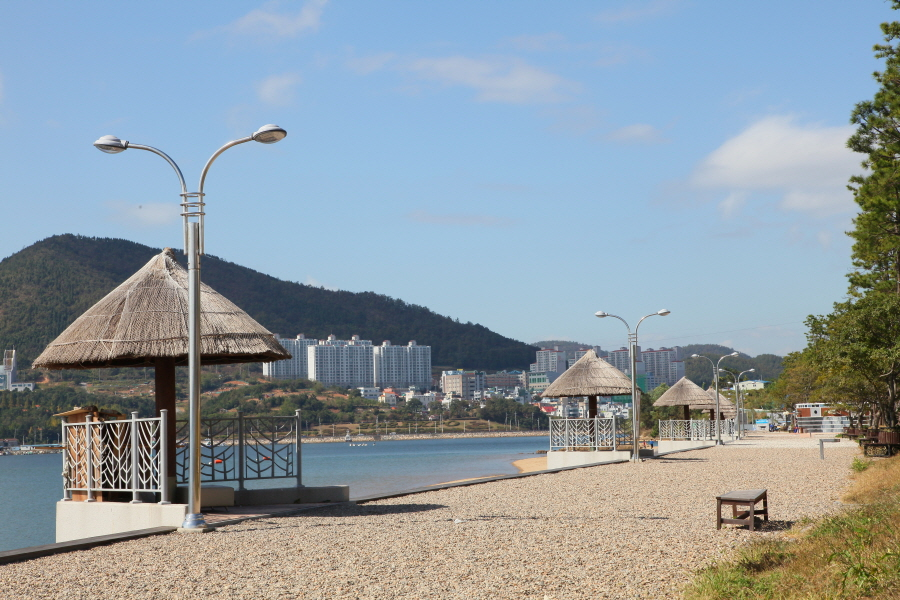
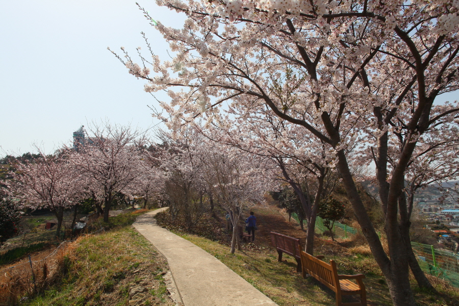
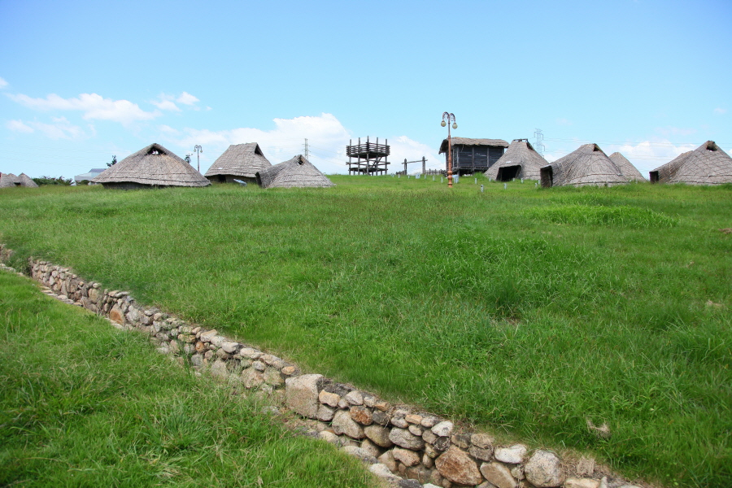

여수의 파고다공원이라고도 불린다. 아기자기한 빛노리야 축제가 열린 곳이다.
최근 재개발을 시도하고있어 시민들에게 안산공원이 조속히 조성되도록 기대를 안기고있다.
웅천 친수공원이라고 불리며 야영장도 있어 캠핑하는 사람들에게 엄청난 인기를 끌고 있는 곳이다.
자산공원의 자산은 일출시간 산이 자색으로 변한다는 뜻이며 이순신 동상이 세워져있고 우리나라에서 제일 마지막에 단풍을 볼 수 있는 곳이다.
공원 전체를 경유하는 산책로를 중심으로 청동기 시대와 철기 시대의 주거지를 재현해 놓았으며, 선사마을, 야외 학습장, 민묘, 지석묘, 삼국시대 와요지, 주거생활 전시 등으로 구성 되어 있다.